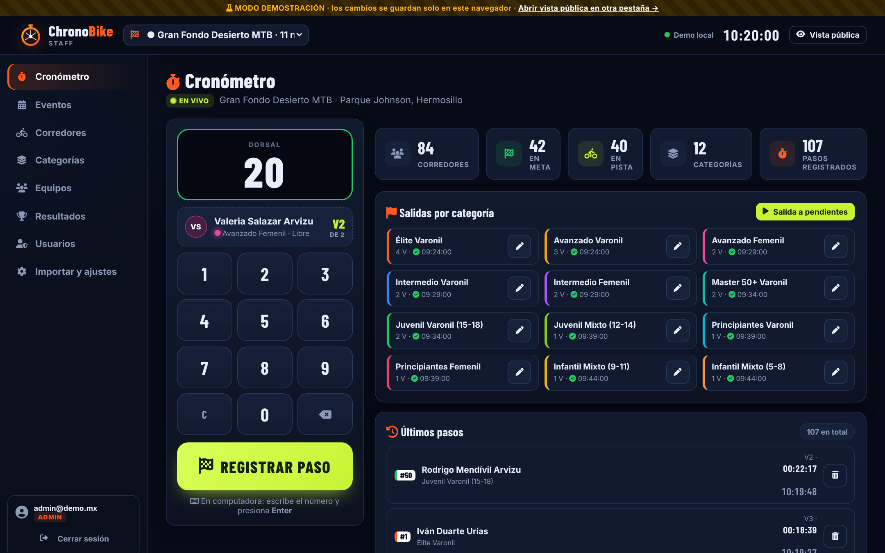
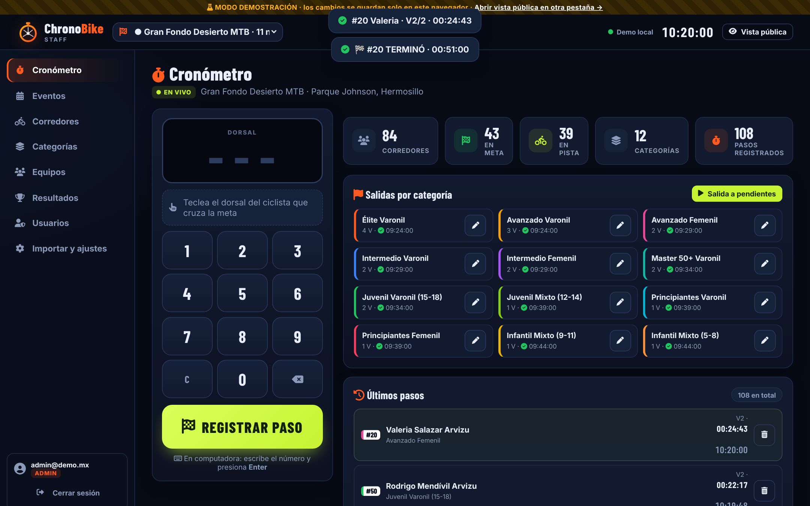
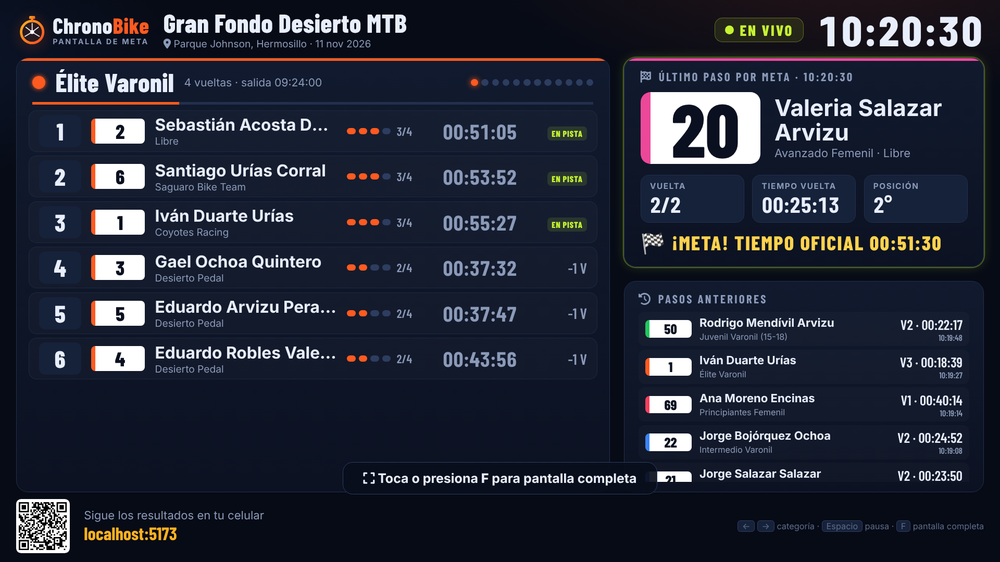
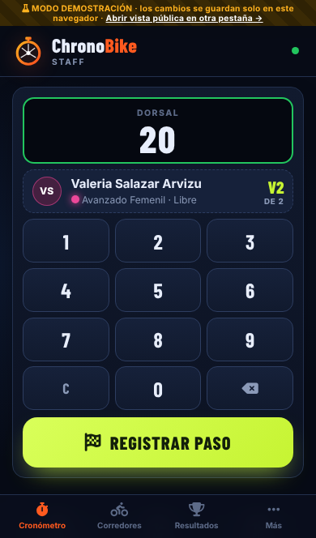

Así funciona el sistema actual: una persona en la meta ve el dorsal del ciclista que cruza, lo teclea en el celular y toca REGISTRAR PASO. De ahí el resultado llega solo a la TV, a los celulares del público y al panel del staff.
1 · Simulación del flujo completo
Fíjate en el retraso de captura (en ámbar): es el tiempo entre que el ciclista cruza y el registrador toca el botón. Con pelotones se acumula. Prueba también cortar el internet.
① Cruza la meta② Teclea el dorsal③ Registra el paso④ Nube⑤ Pantallas
Iniciando…
① La meta (vista superior)
Número visible en la placa1 registrador
②③ App del registrador
---
🏁 REGISTRAR PASO
Interneten línea
En cola en el celular0
Pasos registrados0
④ Nube
0
pasos guardados · tiempo real ⚡
⑤ Pantalla TV en la meta
⑤ Público (celular)
Último paso
—
Esperando…
⑤ Panel del staff
Pasos recibidos0
Último—
Corregir / borrarsí
2 · Esquema de bloques
Todo el software de este esquema ya existe y funciona. El paso humano (ámbar) depende de la atención y la rapidez de quien registra.
Software que ya funcionaPersonaEquipo
3 · Plano de la meta (vista superior)
4 · Capturas reales de la app
Estas son pantallas reales del sistema actual (con datos ficticios).

El registrador teclea el dorsal: la app muestra quién es y qué vuelta lleva (verde = inscrito).

Al tocar REGISTRAR PASO: aviso, tiempo de vuelta y "TERMINÓ" si completó sus vueltas.

Pantalla de TV en la meta: clasificación, último paso en grande y código QR.

La misma app en el celular del registrador.
5 · Qué se necesita en la meta
Equipo
Celular del registrador con la app abierta (y batería externa).
Internet por datos móviles o hotspot. Si falla, la app guarda en cola y envía sola.
Laptop del admin para vigilar resultados y corregir.
Pantalla TV o proyector con la Pantalla de meta (opcional pero muy visible).
Segundo celular de respaldo; y un 2º registrador si hay más de ≈150 corredores.
Buenas prácticas
Teclea → mira el nombre → registra. La hora se toma al tocar REGISTRAR.
En un pelotón, registra uno por uno sin pausa, en el orden de llegada.
Antes de la carrera: da la salida de cada categoría y revisa que cada una tenga su hora.
Si ves un aviso de duplicado o dorsal no inscrito, resuélvelo en el momento.
Al terminar: revisa el panel, cierra el evento y exporta.
Límites que conviene conocer
La precisión es de ≈1 segundo y depende de la persona (tiempo de reacción y de teclear).
Con muchos ciclistas llegando juntos, los últimos del pelotón se registran con más retraso (se ve en la simulación).
Una persona atenta es el único punto de lectura: por eso conviene un respaldo.